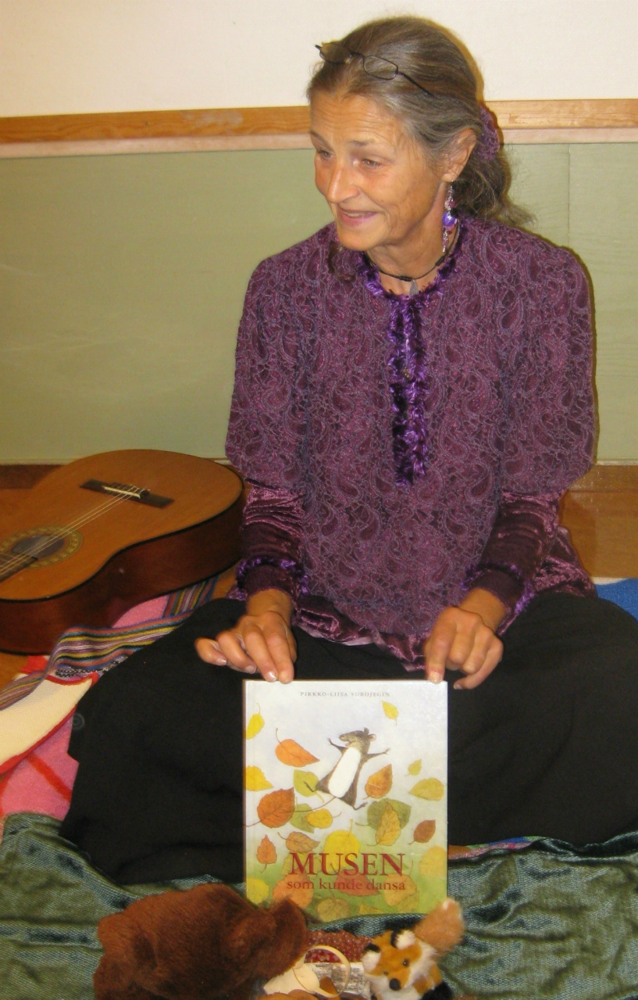

SAGOSTUNDER
SagotantAnn berättar sagor med konkret material som lockar småbarn - detta kallas Sagostundsspel.
Med dockor, mjuka djur och figurer spelar jag upp en berättelse/saga i din förskola. Sagostundsspelet börjar och slutar med gitarrspel och sång. Sagan inleds med en ramsa och avslutas med en visa som anknyter till innehållet. Själva sagan är mellan fem och tio minuter lång.
Sagostundsspelet genomförs på golvet, helst där barnen är vana att samlas. För att alla ska kunna se och känna på sakerna, bör det inte vara fler än 15 barn, plus vuxna.
Sagostundsspel vänder sig främst till barn 1-3 år, men även äldre barn är välkomna!
En till tre grupper på samma förskola per förmiddag. Tid: totalt ca 30 min
Sagostunder :: Priser (pdf)
För mer information kontakta Ann